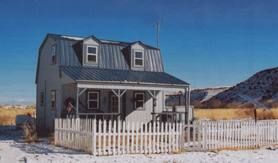
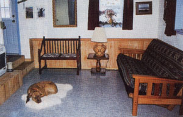
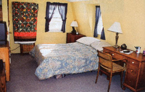
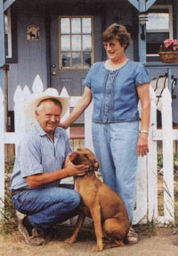

Firsthand: Reports from the Field
I've always loved the San Luis Valley in Colorado, and when I happened upon an ad in the Denver paper about acreage for sale on La Jara Creek, about 15 miles southwest of La Jara, Colorado, my wife Rita and I had to see it. On a cold February morning we drove 250 miles from Denver to the site. We fell in love with the land and bought it on the spot. Three years later, after a lot of labor on our part, we have our little blue home; it and the land cost us approximately $50,000.
The 760-square-foot, off-the-grid home was designed and framed by Heartland industries, but we installed its electrical wiring, plumbing, interior walls, insulation, drywall, painting, wood trim and floor tile.
We enveloped the house with 4-mil poly sheeting before we sided and insulated the exterior walls and the roof. The windows are small, double-paned and efficient, and still provide adequate light. I later added a hexagon window above the dining area to bring in additional light and ventilation.
The home is two stories with a gambrel (barn-style) roof and a covered porch we enjoy year-round. An exterior door opens into the living room, which is small, but cozy. A ventless, propane heater offers ambience and all the heat we need, even at 20 below zero. The stairwell wall allows space for some of our photography. Underneath the front windows, we placed a futon that opens to a bed for guests to use.
Left of the living room as you enter the house is the efficient kitchen, which contains a 7-cubic-foot propane refrigerator (more than adequate for our needs), a microwave, an apartment-sized four burner propane stove and oven, a 7-foot countertop with a single sink, base and wall cabinets, and numerous electrical outlets for small appliances. To the right of the kitchen we built floor-to-ceiling shelf walls for storage and to separate the kitchen and bathroom.
The bathroom has a stool, sink and undersized bathtub I scrounged that is perfectly sized for the shower. We laid the ceramic floor tile ourselves. For now, a Zodi camp shower provides hot water for showering, but later I plan to hook up a propane AquaStar tankless water heater.
The bedroom and our water storage tank and pressurizing system are on the second floor. We engineered the water system to allow simple-to-work-on plumbing. From the tank down to the bathroom, all the plumbing is exposed so we can make repairs without tearing out the drywall. The polyvinyl chloride (PVC) pipes also are easy to fix. The weather in the San Luis Valley can get downright hostile in the winter, and if we lose heat and the pipes freeze, we want to be able to work on them with few hassles.
The bedroom is the largest room in the house. Two beds easily fit in it. Two dressers, a desk, a large closet and under-bed bins give us the storage we need. A combination television/videocassette recorder fits on the dresser, with service provided by satellite-the cable from the dish is routed through the closet. A ceiling fan cools the room in the summer and distributes heat during winter.
Solar panels and an AIR-400 wind turbine generate our electricity. A 5,000-watt gas generator powers the well pump and backs up the battery bank if we are without sunshine and wind for a few days. The battery bank consists of five D8, 200-amp, 12-volt deep-cycle batteries. They need to be replaced about every four years at a total cost of $400. Our electricity costs about $10 per month after the initial investment of $4,500 for solar panels, a wind generator, a Trace inverter and controller (which converts 12 volts to 120 volts and governs the amount of charge to the battery bank), five batteries, and all the wiring, outlets and switches for the house. We provided the labor. In the future a propane-fired generator with an autostart will power the well pump and battery bank. It can be tough to start a pull-cord generator in below-zero weather.
We have a septic system for wastewater. I wanted to use a composting toilet, but county wastewater officials weren't receptive to the idea. Rather than spending money and time getting an engineering report and educating the officials, I decided to install a flush toilet. Eventually, I'd like to install a graywater system for non-toilet wastewater.
A well supplies our water. Because soil freezes 4 feet deep and we hit surface water at 3 feet, I decided to use a yard spigot and pump water to the storage tank on an as-needed basis. Our well, which is drilled to 70 feet, yields 5 gallons of water per minute. Since our water has iron in it, we filter it for drinking. Our largest water consumption (about 10 gallons per day) comes from toilet flushes. We use about 2 gallons each for showering, and we wash dishes twice a day, which usually takes about 5 gallons. Another 2 gallons of water are used every day for drinking and cooking. For watering our garden, we direct rainwater from our roof gutters.
Since completing the home, we've made a few additional improvements. We put on a metal roof because birds were pecking at and ruining our asphalt shingles. We added a deck and an outdoor wood-burning stove. Rita planted many trees. We built a white picket fence around the front of the house to keep area cattle from rubbing against our porch supports. We also planted a wildflower and herb garden in the enclosed yard and constructed a storage shed. Although we had been spending about four days a week here, returning to our old house in Lakewood, Colorado, the rest of the time, in the spring of 2002 we completely moved to our new country home.
Living here full time, we discovered a few things needed changing. We moved the wind generator away from the house-the noise and vibration were annoying at times. We also built an addition to house the batteries and generator. Even though our original battery storage area was vented, we sometimes smelled the sulphur odors when the batteries were charging. Otherwise, everything is going well. The fishing is good and life is great in the little blue home on the creek. What a wonderful way to retire!
What's YOUR story?
Tell us your story of, self-sufficiency and if it'd chosen for publication, we'll pay you $100, We'd especially like reports on how you harvest and store rainwater for your homestead. Submit Your Report of about 1,000 words, along with several photos; to: Firsthand Reports; Mother Earth News 1513 SW 42nd St.;Topeka, KS 66609-1265.
-MOTHER
|
 The living room suits Fergie fine. |
 The house's largest room, the bedroom has ample space for two beds (one not shown) and more. |
 The Bennetts: Dan, Rita and Fergie |
|
 |
|
|